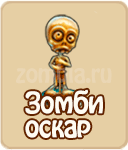

Получено: файл; исходный URL. Иллюстрация найдена на отдельной странице материала ZOMBIA; некоторые alt-подписи источника ошибочны, сопоставление по странице и имени файла. Для недоступного домена zombia.ru взят файл по тому же пути на zombi.at.ua; побайтовая идентичность не проверена. Страница: источник.
Зомби оскар
ВКонтакте; данные из ZOMBIA; 02 Августа 2013, 16:47- Тип
- нет данных
- Покупка
- нет данных
- Продажа
- нет данных
- Как получить
- Создать в Кино: 01 + 100 (ВКонтакте, ZOMBIA; требует сверки).
- Применение
- нет данных
- Особенности
- нет данных
- Версия и дата
- ВКонтакте; данные из ZOMBIA; 02 Августа 2013, 16:47
Данные по источнику · ВКонтакте, ZOMBIA · 02 Августа 2013, 16:47; дата редакции не установлена
Предварительно: Данные одной исторической фанатской страницы; цифры и подписи изображений требуют сверки. Описание и условия сохранены по колонкам без додумывания.. Требуется сверка.
- Описание материала
- Стоимость по лимиту: 1000 монет
- Нужен в строительстве
- [изображение: Планетарий зомби ферма, как построить Планетарий зомби ферма]
- Где достать
- Создать в Кино: 01 + 100


Данные по источнику · ВКонтакте, историческая фанатская база ZOMBIA · 02.08.2013 — дата публикации, редакция неизвестна
Предварительно: Исторический источник; актуальность и переносимость на другие версии не установлены.. Требуется сверка.
- Рецепт в Кино
- 1 предмет по пиктограмме zolotaja-rybka.png и 100 любви по пиктограмме lubov.jpg; название первого предположительно «Золотая рыбка», требует визуальной проверки.
- Расхождение в копии
- На zombi-obmenka.ucoz.ru в аналогичной строке первый ингредиент указан только пиктограммой yazzz.jpg; по имени файла определить его нельзя. Независимость страниц не установлена.
- Применение
- Строительство Планетария; стоимость по лимиту 1000 монет.
Данные по источнику · ВКонтакте, историческая фанатская публикация · 06.08.2013
Предварительно: Фанатский источник; возможное копирование и изменения после публикации не исключены. Неподписанные иконки определены предварительно по именам файлов.. Требуется сверка.
- Рецепт по Zombi0
- 100 s_celebheart.png + 1 s_baby.png = 1 Зомби-оскар; ингредиенты показаны иконками без подписи.
- Расхождение
- На отдельной странице ZOMBIA показаны файлы lubov.jpg и zolotaja-rybka.png. Имена файлов не доказывают тождество предметов; возможно различие редакций или ошибка одной из страниц.
Связанные сущности
нет проверенных связей — требуется сверка.